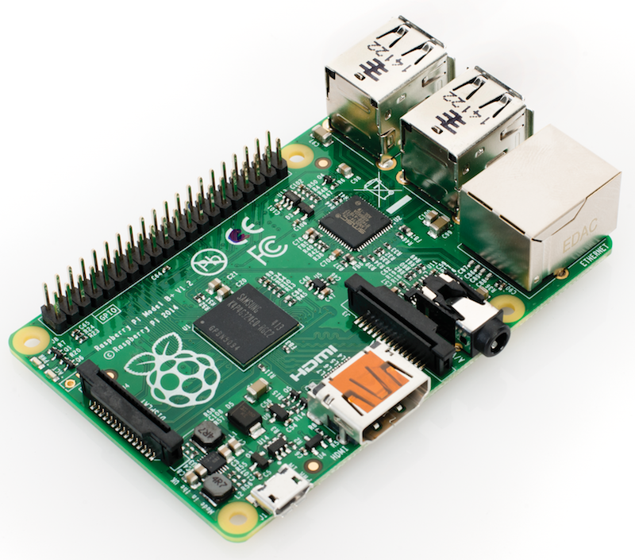

Hardware
Sun 28 February 2016

Pinouts
Depending on the version of the rpi you have, there are different pinouts for the different versions. A great resource is Pinout to figur out what pin is what.

Lights
The main indicators are the lights on the front corner of the board. These are:
OK (green): The board is active (blinks off when accessing the SD card) PWR (red): The board is successfully powered from USB FDX (green): Network is full-duplex LNK (green): The network cable is connected (blinks off when transferring data to/from the network) 10M (yellow): Lit when the board is using a 100Mbps link, not lit when using a 10Mbps
Power
| Product | PSU | Maximum USB peripheral current draw | Typical bare-board active current consumption |
|---|---|---|---|
| Raspberry Pi Model A | 700mA | 500mA | 200mA |
| Raspberry Pi Model B | 1.2A | 500mA | 500mA |
| Raspberry Pi Model A+ | 700mA | 500mA | 180mA |
| Raspberry Pi Model B+ | 1.8A | 600mA/1.2A (switchable) | 330mA |
| Raspberry Pi 2 Model B | 1.8A | 600mA/1.2A (switchable) | ? |
USB Camera
To use the Logitech C270 camera you need to add your user (pi in this case) to the video group:
sudo usermod -a -G video pi
For other users, just change pi to the correct username. Then make sure the driver is loaded:
sudo modprobe uvcvideo
You can double check it works by grabbing an image:
sudo apt-get install fswebcam fswebcam image.jpg
If an image appeared, then all is good.